４月２６日は管理人こやまるの誕生日――。
今年もこんな私のために多くの方からお祝いのメッセージや記念イラスト、そして記念小説までくださり、忘れられない誕生日となりました！
本当に本当にありがとうございました(T-T)。
少々遅くなりましたが、いただいた記念イラストと小説を掲載させていただきました。
いただいた小説には今年も勝手ながら私のイラストを添えて・・・。
皆さんからのお祝いの気持ちにこたえられるよう、これからもサイトやミルモ活動を続けていきたいと思います！
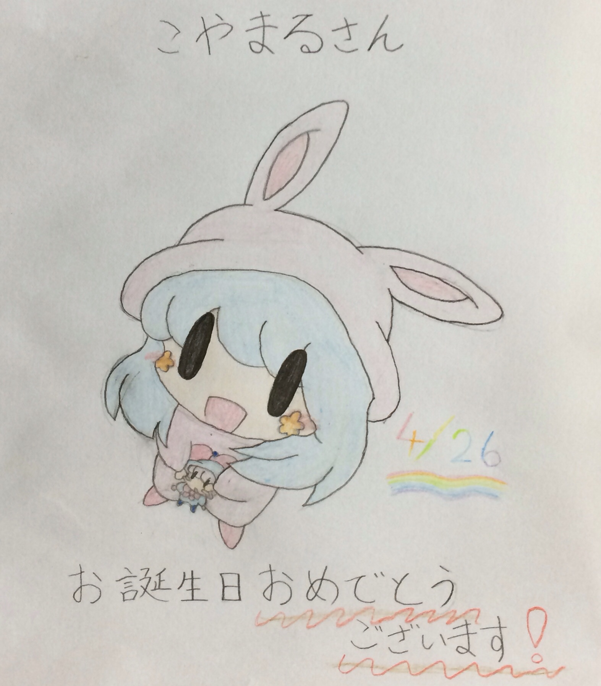
斎藤芽生さんからいただいたパピィ♪
パピィが抱いているのはムルモのぬいぐるみでしょうか。
ムルモは完全にパピィの支配下に置かれちゃっています(^^)
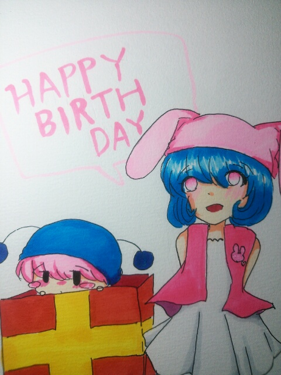
プリン娘さんからいただいたムルパピ♪
パピィはムルモ（本物）をプレゼント！？
ボクをモノ扱いするなでしゅー！というムルモの声が聞こえてきそう。
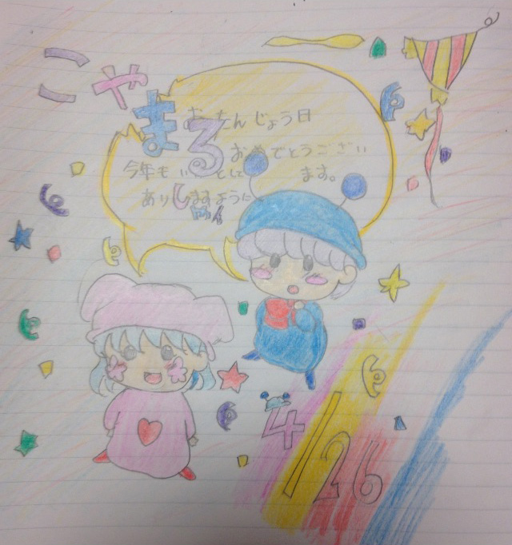
ままなさんからいただいたムルパピ♪
素直に誕生日を祝ってくれるムルパピがかわいい！
背景もにぎやかで楽しい気分になります(^^)
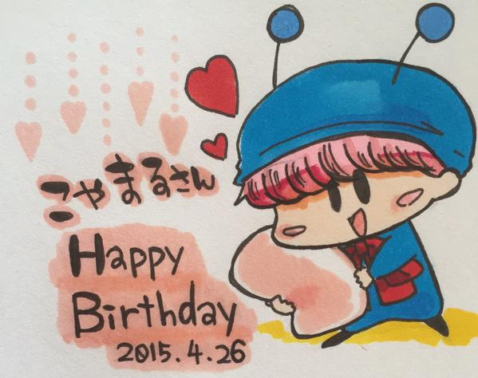
田中叶朶。さんからいただいたムルモ♪
マシュマロをプレゼントするムルモがラブリー過ぎる～。
ムルモは本当にマシュマロくれるのかな？（笑）
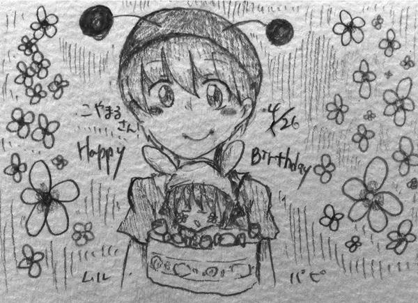
雪楽さんからいただいたムルパピ♪
ケーキの上に、なんとパピィが！？
こ、これはもったいなくて食べられないです～～
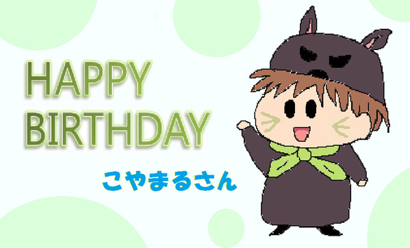
moonさんからいただいたクロム♪
クロムは私の作ったオリフェですが、作った本人も
忘れかけていたクロムを気に入っていただけて本当に光栄です！
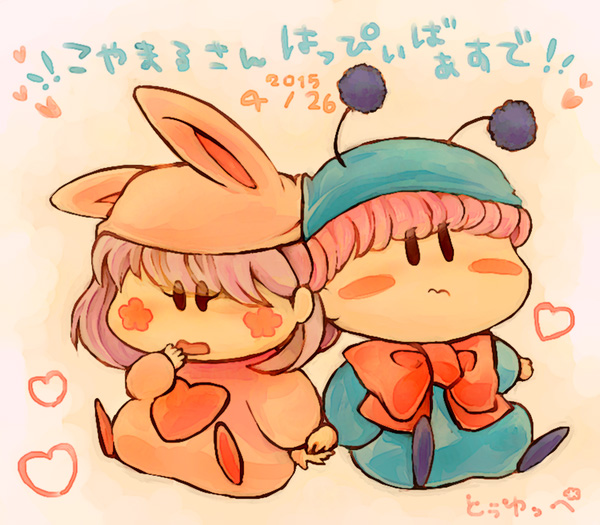
とぅゆっぺさんからいただいたムルパピ♪
二人が恥ずかしそうに手をつないでいてかわいい！
二人の頭がぶつかってつぶれているところもまたかわいいです！！
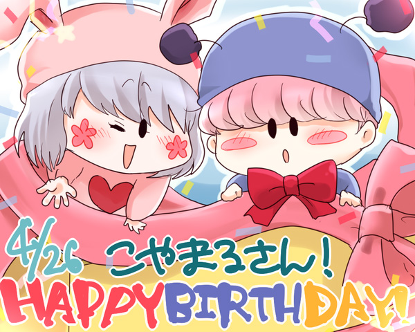
けあさんからいただいたムルパピ♪
さすがはけあさん、ムルパピが動き出しそうなくらいの躍動感！
ムルパピをセットでいただいちゃいます～
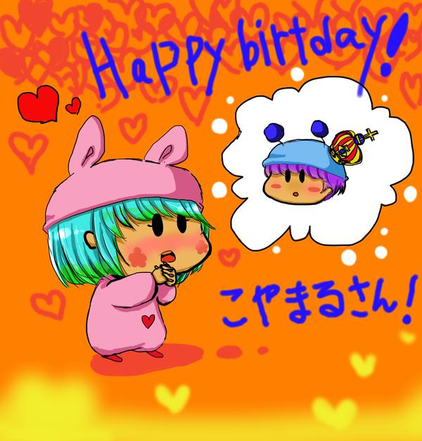
夏田みかんさんからいただいたムルパピ♪
ムルモがかぶる小さな王冠が妙に気になる…(^◇^;)
ラブラブモードなパピィはしばらくそっとしておいてあげよう…
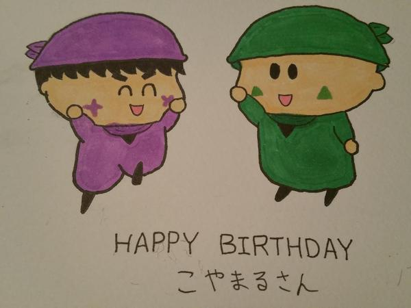
フラピーさんからいただいたサスハン♪
いつもの健気な二人が見ていて和みます。
幸の薄いサスケがこれからも笑顔でいられますように…
「似たもの同士」
梨璃さんからいただいたアクミ＆ヤマネの小説です♪
難しそうな絡みをあえて梨璃さんにリクしてみました(^^;。
いただいた小説は二人らしさが見事に表れていて必見ですよ！
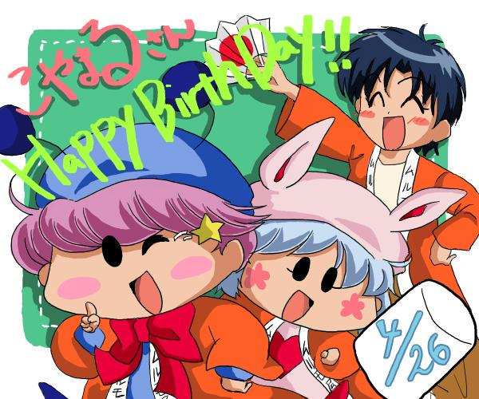
パルムッチョさんからいただいたムルパピ＆松竹しゃん♪
３人ともムルモ屋本舗のはっぴを着ていて、管理人としてもすごくうれしい！
かわいさといい構図といい、私にはもったいないくらいの完成度です！！
(2015/6/25)